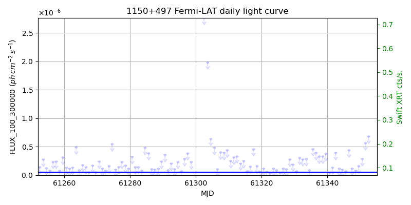
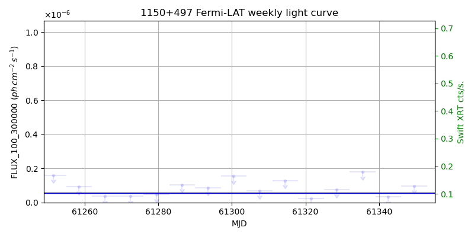
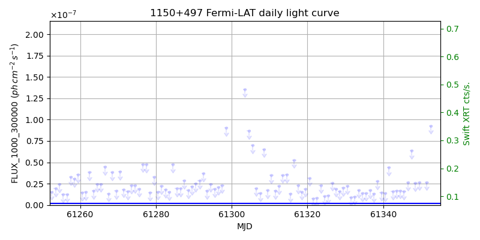
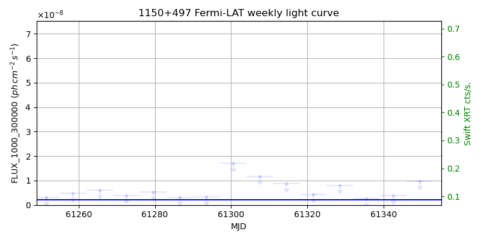

LAT Lightcurve site: https://fermi.gsfc.nasa.gov/ssc/data/access/lat/msl_lc/source/1150p497
Swift site: https://www.swift.psu.edu/monitoring/source.php?source=SBS1150+497
NED: Query
Time of last update of this page: UT: 2026-11-13 16:23 (MJD: 61357.683)
| Property | Value |
|---|---|
| R.A. | 11:53:24.48 |
| Dec. | 49:31:08.4 |
| z | 0.334 |
| 3FGL SpectrumType | PowerLaw |
| 3FGL PL Index | 2.38 |
| 3FGL Flux_100_300000 | 5.40e-08 1 / (s cm2) |
| 3FGL Flux_1000_300000 | 2.26e-09 1 / (s cm2) |
| 3FGL Flux >200 GeV | 1.52e-12 1 / (s cm2) |
| 3FGL Extrap. Crab >200 GeV | 0.01 |
| 3FGL Flux After EBL Absorption >200GeV | 4.55e-13 1 / (s cm2) |
| 3FGL EBL Crab Fraction >200GeV | 0.00 |

| MJD | dMJD | Flux | dFlux | Frac3FGL | FracCrab>200GeV | EBLFracCrab>200GeV |
|---|---|---|---|---|---|---|
| 61348.50 | 0.50 | 7.65e-08 | 0.00e+00 | 0.00 | 0.00 | 0.00 |
| 61349.50 | 0.50 | 1.57e-07 | 0.00e+00 | 0.00 | 0.00 | 0.00 |
| 61350.50 | 0.50 | 2.86e-07 | 0.00e+00 | 0.00 | 0.00 | 0.00 |
| 61351.50 | 0.50 | 5.65e-07 | 0.00e+00 | 0.00 | 0.00 | 0.00 |
| 61352.50 | 0.50 | 6.82e-07 | 0.00e+00 | 0.00 | 0.00 | 0.00 |

| MJD | dMJD | Flux | dFlux | Frac3FGL | FracCrab>200GeV | EBLFracCrab>200GeV |
|---|---|---|---|---|---|---|
| 61321.50 | 3.50 | 2.25e-08 | 0.00e+00 | 0.00 | 0.00 | 0.00 |
| 61328.50 | 3.50 | 7.53e-08 | 0.00e+00 | 0.00 | 0.00 | 0.00 |
| 61335.50 | 3.50 | 1.80e-07 | 0.00e+00 | 0.00 | 0.00 | 0.00 |
| 61342.50 | 3.50 | 3.31e-08 | 0.00e+00 | 0.00 | 0.00 | 0.00 |
| 61349.50 | 3.50 | 9.71e-08 | 0.00e+00 | 0.00 | 0.00 | 0.00 |

| MJD | dMJD | Flux | dFlux | Frac3FGL | FracCrab>200GeV | EBLFracCrab>200GeV |
|---|---|---|---|---|---|---|
| 61348.50 | 0.50 | 2.55e-08 | 0.00e+00 | 0.00 | 0.00 | 0.00 |
| 61349.50 | 0.50 | 2.67e-08 | 0.00e+00 | 0.00 | 0.00 | 0.00 |
| 61350.50 | 0.50 | -1.00e+00 | 0.00e+00 | 0.00 | 0.00 | 0.00 |
| 61351.50 | 0.50 | 2.67e-08 | 0.00e+00 | 0.00 | 0.00 | 0.00 |
| 61352.50 | 0.50 | 9.28e-08 | 0.00e+00 | 0.00 | 0.00 | 0.00 |

| MJD | dMJD | Flux | dFlux | Frac3FGL | FracCrab>200GeV | EBLFracCrab>200GeV |
|---|---|---|---|---|---|---|
| 61321.50 | 3.50 | 4.27e-09 | 0.00e+00 | 0.00 | 0.00 | 0.00 |
| 61328.50 | 3.50 | 8.07e-09 | 0.00e+00 | 0.00 | 0.00 | 0.00 |
| 61335.50 | 3.50 | 2.51e-09 | 0.00e+00 | 0.00 | 0.00 | 0.00 |
| 61342.50 | 3.50 | 3.75e-09 | 0.00e+00 | 0.00 | 0.00 | 0.00 |
| 61349.50 | 3.50 | 9.63e-09 | 0.00e+00 | 0.00 | 0.00 | 0.00 |
--------------------------------------------------------- Using user-supplied coords: 11:53:24.48 49:31:08.4 2000 --------------------------------------------------------- FLWO UT night of: 2026-11-14 Local Sid. @ Midnight: 03:09 Sunset (-15.0) (local, UT): 18:35 01:35 Sunrise (-15.0) (local, UT): 05:42 12:42 Moonrise (local, UT): Moonset (local, UT): 20:50 03:50 Moon phase: 0.22 --------------------------------------------------------- AzTime LSID UT Obj_el Obj_az Mn_el Mn_az Sep. --------------------------------------------------------- 18:35 21:44 01:35 -2.4 339.4 20.1 218.2 120.5 19:05 22:14 02:05 -5.7 343.8 16.0 223.7 120.6 19:35 22:44 02:35 -7.4 348.5 11.6 228.6 120.7 20:05 23:14 03:05 -8.5 353.4 6.9 233.2 120.7 20:35 23:44 03:35 -8.9 358.3 2.0 237.3 120.8 21:05 00:14 04:05 -8.8 3.2 -2.2 241.2 120.9 21:35 00:44 04:35 -8.2 8.1 -9.0 244.8 121.0 22:05 01:14 05:05 -7.0 12.9 -14.6 248.2 121.1 22:35 01:44 05:35 -5.0 17.6 -20.4 251.4 121.2 23:05 02:14 06:05 -1.9 22.0 -26.2 254.5 121.4 23:35 02:44 06:35 -0.0 26.1 -32.1 257.5 121.5 00:05 03:14 07:05 2.7 30.0 -38.1 260.6 121.7 00:35 03:45 07:35 5.9 33.5 -44.2 263.8 121.8 01:05 04:15 08:05 9.6 36.8 -50.2 267.1 122.0 01:35 04:45 08:35 13.5 39.7 -56.3 270.9 122.1 02:05 05:15 09:05 17.7 42.3 -62.4 275.3 122.3 02:35 05:45 09:35 22.1 44.6 -68.4 281.1 122.5 03:05 06:15 10:05 26.7 46.5 -74.2 289.9 122.7 03:35 06:45 10:35 31.4 48.1 -79.6 306.2 122.9 04:05 07:15 11:05 36.2 49.2 -83.2 343.5 123.1 04:35 07:45 11:35 41.0 49.8 -82.1 35.1 123.3 05:05 08:15 12:05 45.9 49.9 -77.4 61.2 123.5 05:35 08:45 12:35 50.8 49.1 -71.8 73.4 123.7 05:42 08:52 12:42 51.8 48.9 -70.5 75.2 123.8 --------------------------------------------------------- Dark hours >55 deg.: 0.00